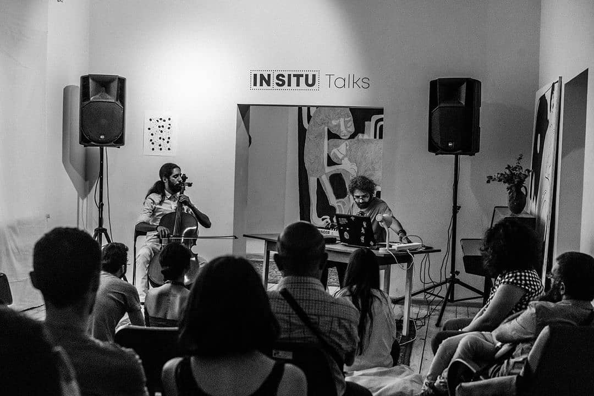

Arash Azadi english | русский | works | contact
Born in 1994 in Hamedan, Iran, Azadi began studying classical Persian setar at the age of nine. In 2012, he enrolled in Armenia's Yerevan State Conservatory, where he majored in composition and began mastering the ins and outs of the visual programming language Max/MSP through an online course offered by the Massachusetts College of Art. His most recent works fall under the umbrella of electroacoustic and experimental music, and are often accompanied by audio-visual effects, performance art or improvised dance and theatre. With a background in math and computer sciences, Azadi has also explored ways to combine modern approaches to sound with acoustic and folk music. To date, his works have been performed in France, Italy, Germany, US, Greece, Georgia, Iran and Armenia. He has performed live at festivals such as Berlin CTM Festival, Unsound Festival Yerevan Edition, Urvakan Festival and Synthposium Festival. In 2019 he was selected as one of SHAPE Platform artists and did a multi-channel audio installation and a commissioned piece for cello and tape for Musikprotokoll festival in Austria. His albums have been released by labels such as Establishment Records in Berlin and Off-Record in Belgium. Since 2020 he runs his own label Structured Experience.
He is now based in Moscow, Russia.
Араш Азади родился в 1994 году в городе Хамедан, Иран. Он начал изучать классический персидский сетар в возрасте девяти лет. В 2012 году он поступил в Ереванскую Государственную Консерваторию, по специальности композиция, в тоже время он начал осваивать язык визуального программирования Max/MSP в рамках онлайн-курса Массачусетского колледжа искусств. Его работы относятся к жанру электроакустической и экспериментальной музыки и часто сопровождаются аудиовизуальными эффектами, перформансом или импровизированным танцем и театром. Имея опыт работы в области математики и компьютерных наук, Азади также исследовал способы сочетания современных подходов к звуку с акустической и народной музыкой. На сегодняшний день его работы были представлены во Франции, Италии, Германии, США, Греции, Грузии, Иране и Армении. Он выступал на таких фестивалях, как Berlin CTM Festival, Unsound Festival Yerevan Edition, Urvakan Festival и Synthposium Festival. В 2019 году он был в числе артистов SHAPE Platform, в этот период Азади создал многоканальную аудиоинсталляцию и пьесу для виолончели и ленты для фестиваля Musikprotokoll в Австрии. Его альбомы были выпущены такими лейблами, как Establishment Records в Берлине и Off-Record в Бельгии. С 2020 года он работает над собственным лейблом Structured Experience.
Сейчас он живет в Москве, Россия.
Designed by Arash Azadi